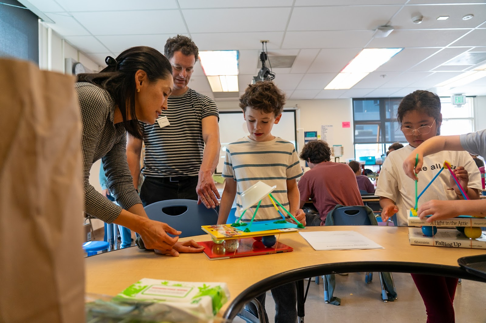

Little sparks. Big discoveries. Wednesday, February 17, 2027 · San Francisco
THE IDEA LAB
Start with
“what if?”
Simple materials. Open-ended questions. Lots of possibilities.
Inspiration for 2027 planning. These are suggested activities, not confirmed stations. Adapt materials and supervision to students’ ages; use adult help with scissors, balloons, and small parts.

Engineering0120–30 min · SUGGESTEDPaper bridge challenge
How much can paper hold?
Explore this idea +
Gather
Paper, tape, two supports, small identical weights.
Try it
Build a paper bridge between two supports. Add weights one at a time, then change the folds or supports and try again.
Ask a curious question
What changed when you folded the paper differently?
 Science02
Science0225–35 min · SUGGESTEDBalloon-powered racer
Put a little air in motion.
Explore this idea +
Gather
Balloons, straws, tape, lightweight recycled materials.
Try it
Design a lightweight vehicle that moves when air escapes from a balloon. Try different designs and compare the distance traveled.
Ask a curious question
Which design went farther, and what would you change?
15–25 min · SUGGESTEDSpin, splash & pattern
Where art meets experimentation.
Explore this idea +
Gather
Paper, washable paint, brushes, simple spinning surface.
Try it
Make patterns with color and movement. Compare marks made at different speeds and layer new colors over your first design.
Ask a curious question
How did movement change the pattern?
Math04
20–30 min · SUGGESTEDBuild a pattern city
A whole neighborhood of patterns.
Explore this idea +
Gather
Blocks or paper shapes, grid paper, markers.
Try it
Build a small city using repeating patterns. Count shapes, compare heights, and create a key that explains your design.
Ask a curious question
Can someone else predict the next part of your pattern?
Technology05 15–20 min · SUGGESTEDCode a human robot
An unplugged coding adventure.
Explore this idea +
Gather
Floor grid or paper map, direction cards.
Try it
Work in pairs. One person writes step-by-step directions; the other follows them to reach a goal. Find and fix instructions that don’t work as expected.
Ask a curious question
Which instruction needed to be more precise?
Engineering06
25–35 min · SUGGESTEDRecycled-material marble run
One marble. Many possible paths.
Explore this idea +
Gather
Cardboard tubes, tape, cardboard base, marbles.
Try it
Build a path that carries a marble from start to finish. Add turns, adjust slopes, and test one change at a time.
Ask a curious question
What helped the marble keep moving?
Science07
15–25 min · SUGGESTEDPaper helicopter lab
Make a prediction. Take it for a spin.
Explore this idea +
Gather
Paper, scissors, paper clips, ruler.
Try it
Make paper helicopters with different wing lengths. Release each from the same safe height and compare how they fall.
Ask a curious question
What happens when you change the wing length?
Art08 15–25 min · SUGGESTEDLight & shadow studio
Turn a shadow into a story.
Explore this idea +
Gather
Flashlights, paper, translucent materials, small objects.
Try it
Explore shadows on a wall or paper surface. Move the light and objects, trace shapes, then combine them into an artwork.
Ask a curious question
How can you make the same object cast a different shadow?
The best ingredient? Curiosity.Let students make predictions, try their own approaches, and talk about what they notice.